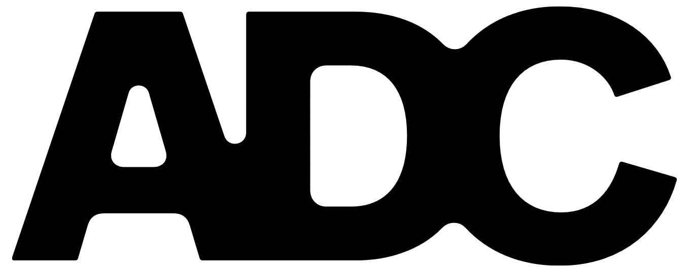

ADC Consulting · 2026
The State of
Agentic AI
Lots of soulsearching — but real results
Section 02 · The big question
Vibe-o-meter
Hyped
Disillusioned
time →
Disillusioned
(but relieved)
Hyped
(but somewhat scared)
▶ Start the vibe check
Section 03 · What shapes my view
My triangle of influence
The discourse
X / Twitter
My team
25 consultants
Our clients
various industries
Me
Section 04 · Definitions
What is Agentic AI anyways?
Agent
Human–AI
Section 05 · The journey
What we've been building
(& seeing)
Early 2024
Building simple (RAG) chatbots
→
Late 2024
LLM-based workflows — or quasi-agentic systems?
→
~2025
Design moves to the forefront
→
~Now
The first truly agentic systems
→
Looking ahead
→
↩ Timeline
Early 2024 · Breakout
Simple RAG chatbots
Human
Send Query
Query
AI
Fetch last
3 messages
Fetch context
Vector DB
Append
query + last 3 msgs + context
Generate Answer
Answer
Human
Agentic criteria
LLM
State
last three messages
Tool-use
if one counts retrieval as a single tool
Control-loop
running deterministically through a graph
Begin ▶
↩ Timeline
Late 2024 · Breakout
LLM-based workflows
Query
Human
Decide
answer or refuse
(hardcoded or LLM)
AI
Refuse
How to answer
Memory
Vector DB
Web search
Answer
Guardrails Check
Variants
• Decision hardcoded
• Decision LLM
• + rewrite & accept
Answer to human
Human
Agentic criteria
LLM
decides and generates
State
memory, but still shallow
Tool-use
memory · vector DB · web search
Control-loop
a guardrails rewrite loop — but mostly pre-wired
Begin ▶
↩ Timeline
~2025 · Breakout
Design moves to the forefront
Agentic criteria
LLM
decides and generates
State
session memory, still shallow
Tool-use
a handful of wired-in tools
Control-loop
still a fixed, pre-wired flow
Agentic criteria ▶
↩ Timeline
~Now · Breakout
Truly agentic systems
Human
Send Query
Upload docs
Planning
AI
AskQuestion
VerifyResources
PresentPlan
…
Plan
/
accept
/
reject
Execution
MCP – ProductInfo
MCP – CustomerInfo
ContactHistory
…
Draft
/
accept
/
reject
Result
Human
Agentic criteria
LLM
plans, reasons and decides
State
memory, documents, evolving plan
Tool-use
retrieve · generate · verify
Control-loop
plans, acts, checks and retries on its own
Begin ▶
↩ Timeline
Looking ahead · Breakout
What's on the horizon
Multi-agent
systems
Long-term memory &
cross-system memory
Longer time
horizons
Identity &
Integrations
Costs
- Domain models, context
engineering, local hosting
ROI
- Measurement
Trust
- Reliability & Observability
Begin ▶
Thank you
Let's build
what's next.
adc-consulting.com
Intro
Vibe-o-meter
Influence
Definition
Timeline
Close
←
→
← → arrow keys to navigate